今回の状態
| 対象 | 状態 | 変わること |
|---|---|---|
| 王国・初心者 | 13波完走・採用版／目安内 | 最終通し 5分47.0秒 |
| シナリオ1・竜ルート | 竜ルート検証済み・今回の更新対象 | 緑の竜との戦い→王国軍の追撃→洞窟の順に接続 |
| 操作する巨大魔術師 | 検証済み・今回の更新対象 | 30秒の巨大化と能力を保ち、足元の沈みを補正 |
| 敵の宮廷魔術師 | 検証済み・今回の更新対象 | 巨大化後の殴り・前傾と水面の足元を補正 |
| 魔王の見た目 | 検証済み・今回の更新対象 | 人の姿の模型の読み込み、牛と魔人の打撃を修正 |
| 森の番人の根 | 検証済み・今回の更新対象 | 余分な板を除去。攻撃の予告と当たり判定は維持 |
| キノコ住居 | 制作・外観検品済み／配置・公開は未実施 | 2K RGBの色付き原本、通常版と遠景用を検品 |
この表は今回の追加変更の状態です。以前の公開済み機能すべての再検証や、全素材の完成を意味しません。
緑の竜のあと、王国軍と戦ってから洞窟へ
竜ルート検証済み・今回の更新対象。最終検証と公開状態は別に確認します。
これまでは緑のワイバーン戦から地下迷宮へ進んでいました。間に王国軍の追撃戦を加え、撃退後は洞窟の奥と石段を経て、既存の地下迷宮へつなぐ変更です。
竜ルートの実プレイで、緑のワイバーン戦の後に王国軍が行動し、撃退後に洞窟へ進む順序を確認しました。兵士・弓兵・野戦砲の模型、砲口からの見通しと実際の砲撃、地下迷宮に入った時のワイバーンの仲間が1体であることを含む12項目が合格。既存の勇者一行の演出は保持しています。今回の通し試験は竜ルートで、竜以外は変更対象外です。
終了時刻：2026-11-18T23:54:58+09:00。根拠：scenario1/browser-photos.json。

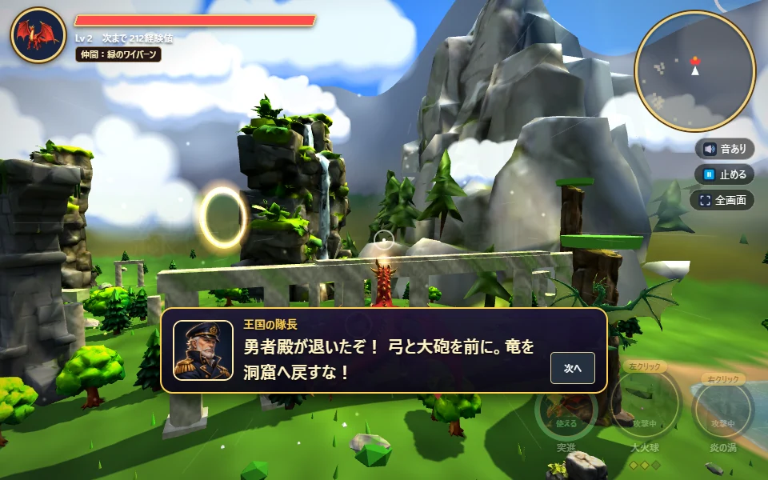

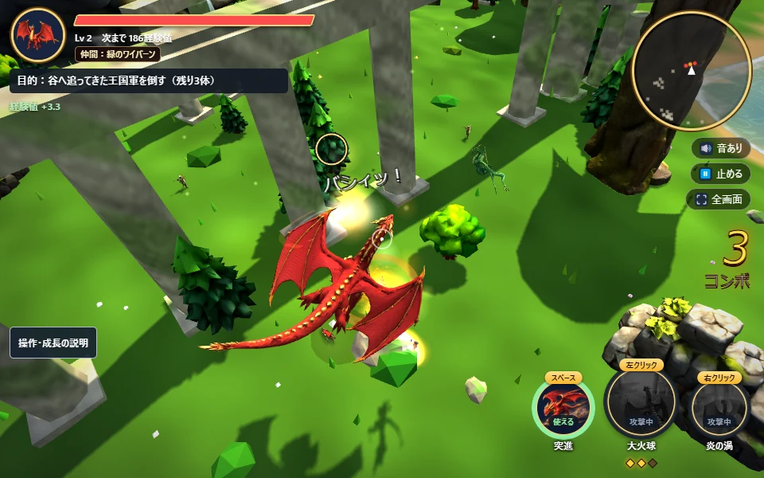

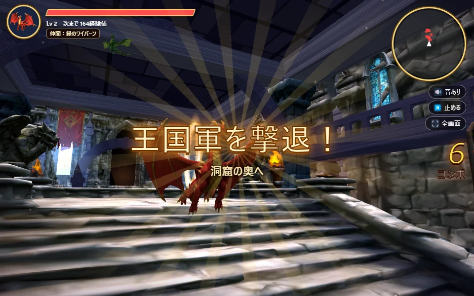
同じ通常入力の通しに撮影の合図を加え、保存した本来の描画処理を各写真の直前に1回実行しています。地下の写真は計測後、既存の送りボタンを押して1.2秒進め、暗転終了・地下場面の表示・味方1体を確認して撮影しました。確認終了：2026-11-18T23:54:58+09:00。
王国編は5分47.0秒で13波を完走
第1波からの実測は5分47.0秒。本人の「6分くらい」に向けて調整したこの版を採用します。従来と同じ入力方針での単回結果であり、実際に遊ぶ人全員の所要時間を保証するものではありません。配信状態は末尾の公開照合記録で確認できます。
王国の初心者モードだけ、敵の人数と体力、波間の待ちを調整しました。通常モードと他の章の設定は保持しています。
| 測定 | 結果 | 範囲 |
|---|---|---|
| 採用版：第1波からクリア | 5分47.0秒 | 小数第1位まで表示。王国3章13波を完走。 |
| 事前に設けた参考範囲 | 5分30秒〜6分30秒 | 今回の単回結果は範囲内。全員の時間を保証する値ではない。 |
| 最低体力 | 191.96／260（73.8%） | 通常の敵AIとダメージを使用。 |
| 最終試験ジョブの実終了 | 2026-11-18T23:47:30+09:00 | 共通GPUキュー324の終了。ゲーム内の仮想時刻とは別。 |
| 試験JSONの生成記録 | 2026-11-18T23:42:07+09:00 | 試験開始付近の記録。ゲーム終了時刻には流用しない。 |
レッドドラゴンを使い、従来と同じ標準の自動入力方針で1回計測。固定した乱数と仮想時計で、通常の敵AI・ダメージを動かしています。必殺の共通待ち時間は6秒です。紙芝居は既存の送り操作を使い、掛け合いの会話は残しています。
操作・キャラ・演出で時間は変わります。全員が同じ時間で終わるという保証ではありません。所要時間は小数第1位で表示し、担当作業の所要時間とは区別しています。JSONの生成時刻、ジョブの実終了、レポート生成、公開確認は別の時刻です。王国の初心者モードの掛け合い中に自動で進む挙動を止め、停止中に前の波の残弾で被弾する経路も保護しました。
掛け合い中の勝手な前進も止めました
同じ5つの台詞が流れる間の、開始点からの最大移動は608.575→0.000ゲーム内単位。旋回できることと、会話後に操作が再開することも確認しました。台詞や表示速度は保持しています。
確認終了：2026-11-18T23:49:58+09:00。根拠：easy/boss-talk-browser/result.json。
採用までの参考試験を見る
増援の最低30人設定が人数削減を打ち消していたため、初心者の王国だけ倍率1.3・上限48・最低18へ変更しました。通常と他章は倍率1.6・上限84・最低30を保持。途中の候補は移動や戦闘条件も異なるため、時間差だけを改善の効果とは扱いません。
| 試験 | 第1波からの時間 | 扱い |
|---|---|---|
| 参考試験1（キュー308） | 6分53.4秒 | clear。当時の候補であり、採用版の結果とは分ける。 |
| 参考試験2（キュー310） | 6分38.2秒 | clear。当時の候補であり、採用版の結果とは分ける。 |
| 参考試験3（キュー312） | 7分23.8秒 | clear。当時の候補であり、採用版の結果とは分ける。 |
| 参考試験4（キュー315） | 6分38.6秒 | clear。当時の候補であり、採用版の結果とは分ける。 |
| 参考試験5（キュー317） | 6分47.4秒 | clear。当時の候補であり、採用版の結果とは分ける。 |
| 参考試験6（キュー319） | 6分45.8秒 | clear。当時の候補であり、採用版の結果とは分ける。 |
| 保護追加前の参考（キュー321） | 6分33.6秒 | 同じHP・編成条件。前進停止中に前波の弾で被弾する経路の保護を追加する前。 |
| 採用試験（キュー324） | 5分47.0秒 | 同じHP・編成と入力方針。停止中の被弾保護を含む版を単回確認。 |
保護追加前の393.6秒と今回347.0秒の差は46.6秒ですが、単回同士の比較なので保護だけの効果とは断定しません。追加のHP弱体化や、通る乱数を待つ測定は行わず、この採用試験の結果をそのまま記録します。
操作する巨大魔術師：足元が沈まないように
金リングで30秒巨大化するキャラです。ゲームの表示名は「巨大化する魔法使い」。大きさ・能力・攻撃の届く距離を保ち、動きに合わせて見た目だけの高さを補正します。
| 固定した場面 | 変更前の沈み | 変更後 |
|---|---|---|
| 被弾時の姿勢 | 0.893 ゲーム内単位 | 0.000000 ゲーム内単位 |


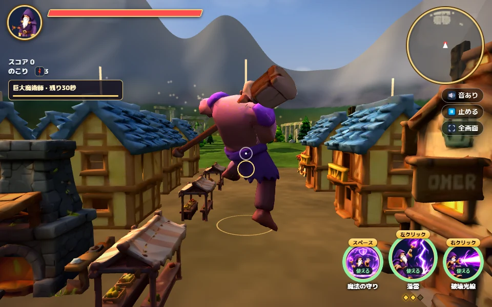
この固定写真の姿勢では、全8,225頂点の最低点と、その足元の地面を比較。地面の高さ3.0000、足の最低点は2.1031→3.0000、地面との差は-0.8969→0.0000です（負は地面より下）。撮影専用の薄い輪が地面の高さを示します。写真の姿勢値であり、別の実攻撃検査の値や最大の沈みとは混同しません。
足元の細い輪は、この比較写真だけに付けた地面の高さの目印です。ゲームの模型や床を変更したものではありません。
通常・巨大化・待機・歩行・被弾姿勢・落雷・光線・空中・着地・水際・縮小・再変身・キャラ変更後を確認しました。パソコン幅960とスマホ相当幅390でのブラウザー検査です。
確認終了 2026-11-18T22:39:18+09:00。実際の低性能スマホのFPSは未測定です。
敵の宮廷魔術師：大きくなった後の足元を補正
王城で一対一になる敵です。追いつめると巨大化します。操作する魔法使いと分けて、待機・歩行・殴り・叩きつけ・跳躍・水面と、終了後に巨大な姿が残らないことを確認しました。
| 固定した場面 | 変更前の沈み | 変更後 |
|---|---|---|
| 巨大な敵の殴り | 4.366 ゲーム内単位 | 0.000000 ゲーム内単位 |

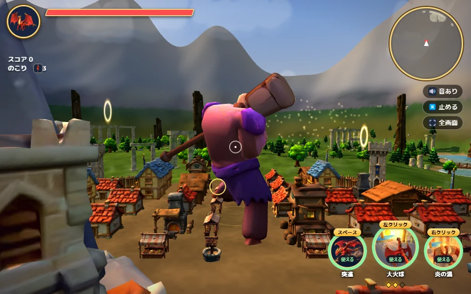

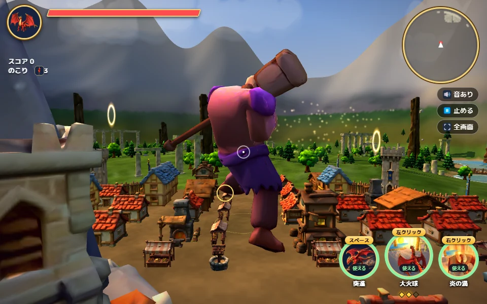
この固定写真の姿勢では、全8,225頂点の最低点と、その足元の地面を比較。地面の高さ3.0000、足の最低点は-1.0692→3.0000、地面との差は-4.0692→0.0000です（負は地面より下）。撮影専用の薄い輪が地面の高さを示します。写真の姿勢値であり、別の実攻撃検査の値や最大の沈みとは混同しません。
細い輪は比較撮影用の地面の目印。画像と一緒に、足の最も低い点とその場所の地面の高さを記録しています。
確認終了 2026-11-18T22:38:28+09:00。旧新は地形の乱数、位置、視点をそろえています。「land」と名付けた1枚には下降中の姿もあるため、それだけを着地完了の根拠には使っていません。
前後の短い動画を見る
魔王と素材制作は、段階を分けて継続
魔王の見た目：検証済み・今回の更新対象
人の姿の魔王には黒騎士の模型を使い、読み込みが遅れた時も届いた模型へ切り替えます。牛の魔物と黒い煙の魔人は、腕を振る方向と当たった瞬間を見分けやすくします。射程・威力・命中の回数は既存処理を維持します。
キノコ住居：制作・外観検品済み、ゲーム配置と公開はこれから
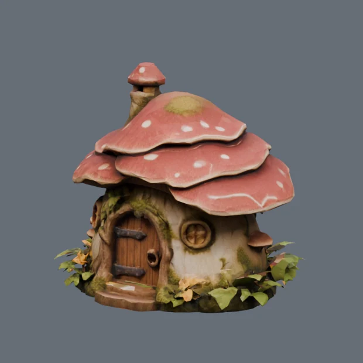
GPUで2KのRGB色付き原本を制作。配信用の通常版は7,978面・1K画像・393,312バイト、遠景用は1,497面・512px画像・213,156バイトです。2K原本と通常版を4視点で確認しました。屋根右端の短い白筋、階段の小さな淡色斑は残りとして記録しています。
ゲーム内の配置、衝突、距離による模型の切替、低性能実機、公開は未実施です。着色と外観検品をゲームへの導入完了とは数えません。
瓦礫・水車・種莢の小屋：制作と外観検品まで完了
3点ともGPUで2KのRGB色を付け、通常版1K・反復用512pxまで用意し、素材担当が外観を検品しました。ゲーム内の配置・衝突・表示・公開は未実施です。台帳の公開数68は据え置きで、この3点を公開済みに加算していません。

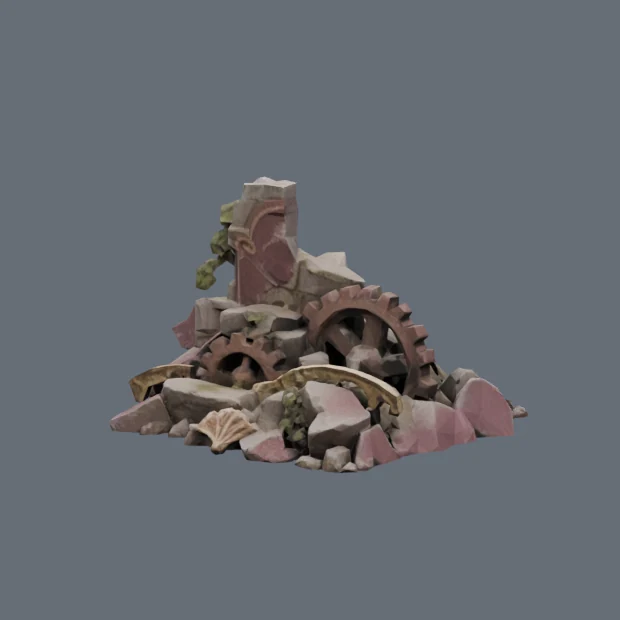

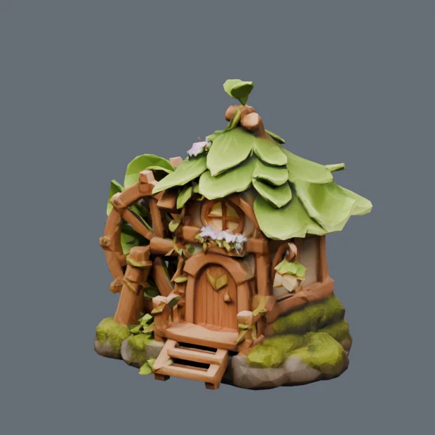

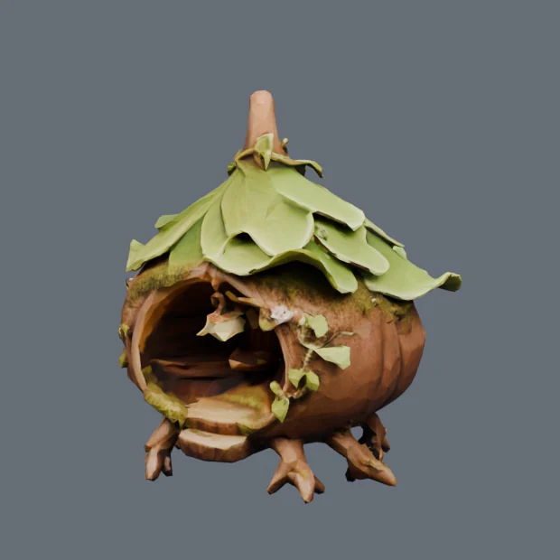
| 素材 | 通常版 | 反復用 | 残る作業 |
|---|---|---|---|
| 遊園地の瓦礫 | 7,967面／1K RGB／381,944バイト | 1,499面／512px RGB／152,528バイト | 配置・衝突・ゲーム表示・公開は未実施 |
| 妖精の水車 | 7,990面／1K RGB／416,848バイト | 1,499面／512px RGB／168,608バイト | 配置・衝突・ゲーム表示・公開は未実施 |
| 種莢の小屋 | 7,963面／1K RGB／399,296バイト | 1,500面／512px RGB／163,280バイト | 配置・衝突・ゲーム表示・公開は未実施 |
使用量は担当セッション区間の集計だけを示し、この3点へトークンを按分していません。
森の番人の根：検証済み・今回の更新対象
着色済みの根から余分な緑・黄の板を取り除き、通常版6,978面と反復用の軽量版1,499面を用意しました。今回は既存素材の修復で、新たなGPU生成ではありません。実際の攻撃を2回ずつ、3ケースで確認。予告、出現、ダメージ、片づけが合格しました。確認終了は2026-11-18T23:01:16+09:00。配信状態は末尾の公開照合記録で確認できます。
元の発注210件は継続中です。制作・受領・検品・公開を分け、今回の1点の修復を全件完了とは数えません。
魔王の前後写真と動きを見る

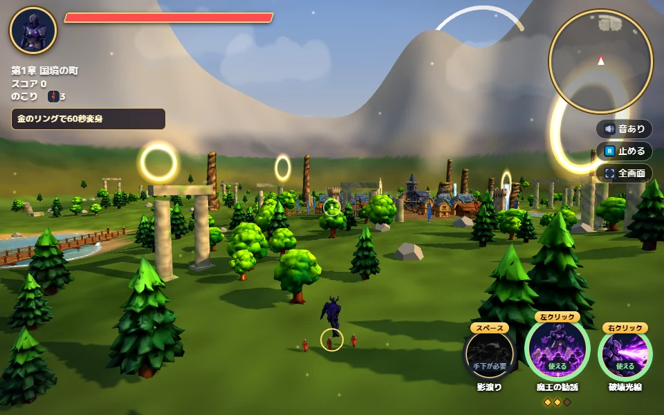

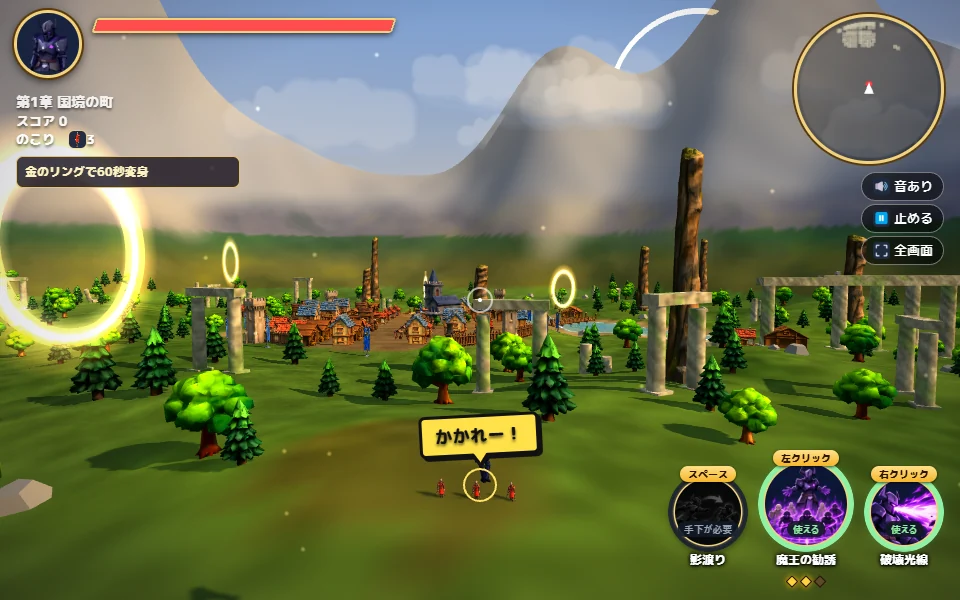

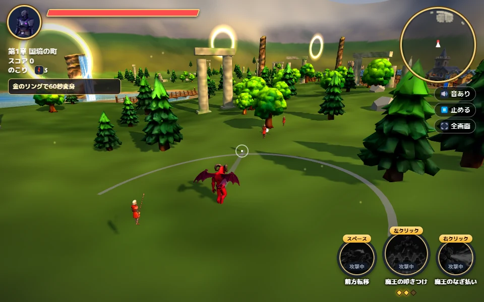

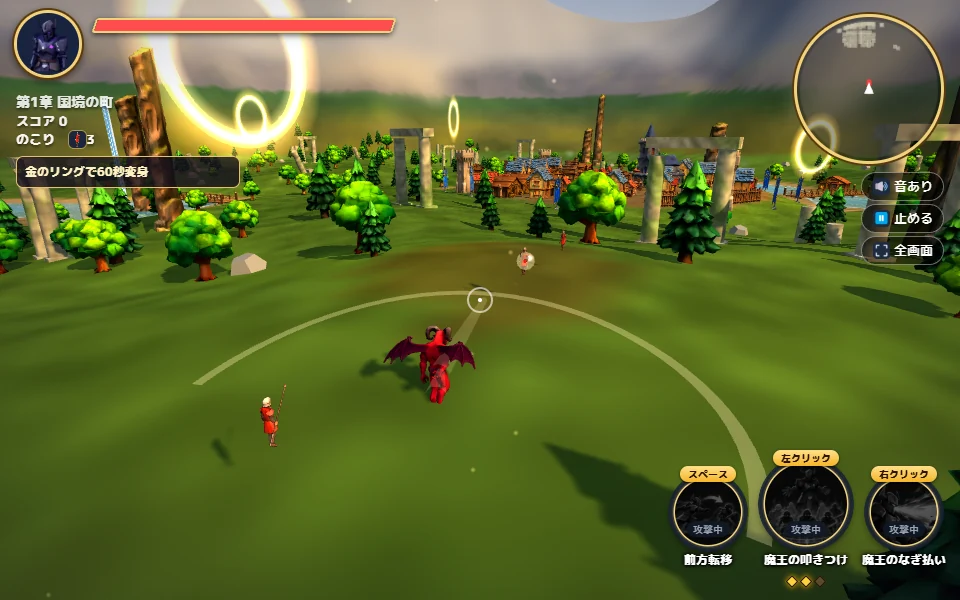

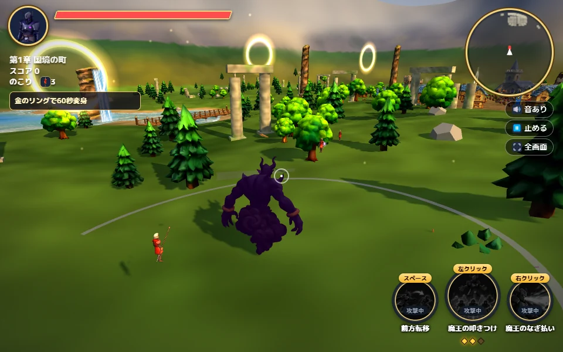

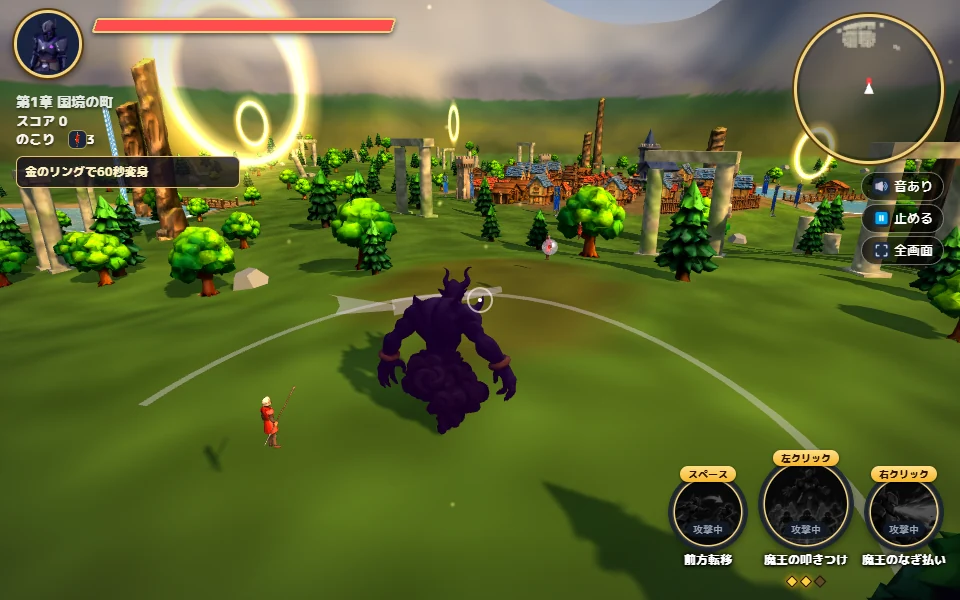
確認終了 2026-11-18T23:21:07.364006+09:00。旧新960/390幅、実際の攻撃処理で判定と接触表示を確認。
根の修復前後と攻撃画面を見る

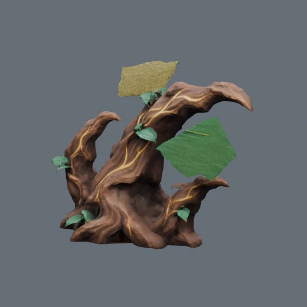

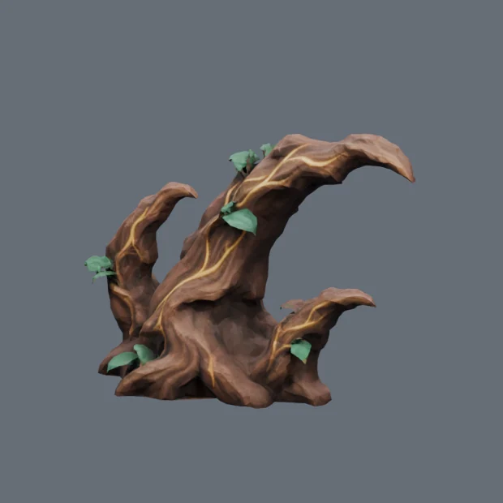

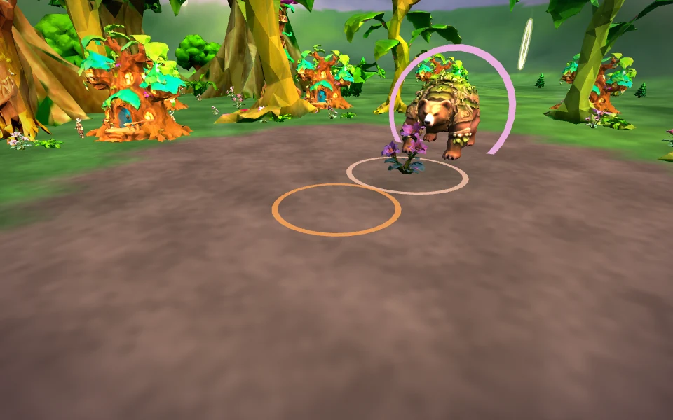

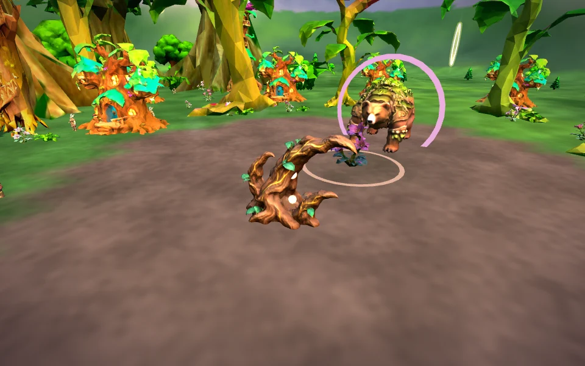
確認終了 2026-11-18T23:01:16.955139+09:00。模型の修復と、ゲームの予告・命中・片づけを分けて確認。
今回の依頼と、元の提案の区別
以下は今回の追加依頼です。以前からある図鑑の提案原文には混ぜていません。
残りも進めて。王国編は6分くらいでクリアできるように調整して、素材制作も続けて 宮廷魔術師巨大化したら沈んでしまってる
人型魔王のグラフィック悪化、 牛、マ人の接近攻撃がわかりにくい
シナリオ1の勇者一行はいいけど、それ以降悪化してる。緑のドラゴンとの戦いのあと王国軍との戦いいれて。その後に洞窟にしよ
対応表W20は、原文に「宮廷魔術師」とあり、説明は金リングで巨大化する操作キャラを指していました。原文を残したまま今回の追記を付け、王城の敵も別項目として確認しています。
引用の根拠は今回の制作記録README。資料全体の原提案・応募画像の再照合はしていません。
どこまで確かめ、何分かかったか
入口は共有索引の今回項目、制作記録、図鑑の魔法使い記事、対応表W20、各試験結果です。今回変更した範囲に絞っています。
下は2026-11-18T23:55:37+09:00時点の使用量です。それ以降の追加検証・資料作業・公開作業は未集計です。各担当の全作業を1つのキャラや機能の使用量に流用していません。キャッシュ入力は入力の内数で、総量へ重複加算しません。
親：全体統合・検証・公開準備
- 厳密な指示時刻
- 未取得。開始ログは2026-11-18T22:15:05+09:00。
- 集計区間の長さ
- 1時間40分。待機を含み、秒未満を切り捨て。
- 記録済みの途中報告
- 未取得。再開後を含む最終完了は未取得。
- トークン
- 総量 48,858,310 ／ キャッシュ入力 48,339,072 ／ 非キャッシュ入力 385,723 ／ 出力 133,515
- 集計末尾
- 2026-11-18T23:55:31+09:00
- 範囲
- 今回依頼以降の担当全体。資料や個別キャラへ按分していません。
巨大魔術師・資料・追加調査
- 厳密な指示時刻
- 2026-11-18T22:16:19+09:00。子の開始ログは2026-11-18T22:16:19+09:00。
- 集計区間の長さ
- 1時間39分。待機を含み、秒未満を切り捨て。
- 記録済みの途中報告
- 未取得。再開後を含む最終完了は未取得。
- トークン
- 総量 57,528,348 ／ キャッシュ入力 57,135,488 ／ 非キャッシュ入力 262,901 ／ 出力 129,959
- 集計末尾
- 2026-11-18T23:55:31+09:00
- 範囲
- 今回依頼以降の担当全体。資料や個別キャラへ按分していません。
- 後続の追加指示
- 2026-11-18T22:28:39+09:00 ／ 2026-11-18T22:37:17+09:00 ／ 2026-11-18T22:43:34+09:00 ／ 2026-11-18T22:53:25+09:00 ／ 2026-11-18T23:00:45+09:00 ／ 2026-11-18T23:06:44+09:00 ／ 2026-11-18T23:12:48+09:00 ／ 2026-11-18T23:16:23+09:00 ／ 2026-11-18T23:24:06+09:00 ／ 2026-11-18T23:29:52+09:00 ／ 2026-11-18T23:33:14+09:00
王国の時間調整・魔王の見た目・シナリオ1
- 厳密な指示時刻
- 2026-11-18T22:16:31+09:00。子の開始ログは2026-11-18T22:16:31+09:00。
- 集計区間の長さ
- 1時間35分。待機を含み、秒未満を切り捨て。
- 記録済みの途中報告
- 2026-11-18T23:51:37+09:00。再開後を含む最終完了は未取得。
- トークン
- 総量 39,763,163 ／ キャッシュ入力 39,225,344 ／ 非キャッシュ入力 442,393 ／ 出力 95,426
- 集計末尾
- 2026-11-18T23:51:37+09:00
- 範囲
- 今回依頼以降の担当全体。資料や個別キャラへ按分していません。
- 後続の追加指示
- 2026-11-18T22:27:12+09:00 ／ 2026-11-18T22:43:24+09:00 ／ 2026-11-18T22:46:16+09:00 ／ 2026-11-18T22:51:45+09:00 ／ 2026-11-18T22:57:48+09:00 ／ 2026-11-18T23:20:04+09:00 ／ 2026-11-18T23:22:15+09:00
素材の継続制作
- 厳密な指示時刻
- 2026-11-18T22:16:41+09:00。子の開始ログは2026-11-18T22:16:42+09:00。
- 集計区間の長さ
- 1時間33分。待機を含み、秒未満を切り捨て。
- 記録済みの途中報告
- 2026-11-18T23:49:41+09:00。再開後を含む最終完了は未取得。
- トークン
- 総量 52,650,062 ／ キャッシュ入力 51,766,912 ／ 非キャッシュ入力 781,404 ／ 出力 101,746
- 集計末尾
- 2026-11-18T23:49:41+09:00
- 範囲
- 今回依頼以降の担当全体。資料や個別キャラへ按分していません。
- 後続の追加指示
- 2026-11-18T22:33:47+09:00 ／ 2026-11-18T22:46:27+09:00 ／ 2026-11-18T23:00:59+09:00 ／ 2026-11-18T23:30:31+09:00
再試行：魔術師は初期の行列更新と撮影配置を修正。根の最初の画面測定は古い座標行列を読んだため無効。王国試験は会話の残し方を保って複数候補を比較しています。試験4は6分38.6秒。人数を減らしても増援の最低30人設定が打ち消していたため、初心者の王国だけ増援数の倍率を1.3・上限48・最低18へ変更し、試験5へ進めました。通常と他の章の倍率1.6・上限84・最低30は保持し、CPUで確認しました。各担当の個別工程への按分値は未取得です。
写真の準備でやり直した理由
- 写真準備：試験用OBSERVEが描画関数を無描画へ置換しており、以前の軍戦・砲撃・洞窟写真には直前のGPU画面が残っていた。新写真は撮影直前に保存した本来の描画を1回実行する。 写真準備。機能通しの合格とは別。
- 試験329：page.evaluateへ渡した代入式が関数値を返し、自動実行されて撮影準備の開始前に失敗。代入を即時実行しない関数ブロックへ入れ、330で再実行する。 撮影道具の初期化。ゲームの実装失敗ではない。
公開先の照合記録
配信の照合記録は公開後に追加します
- 実際の確認時刻
- ゲームの反映版
本文は生成時点の記録です。この欄は3つの公開先の照合がすべて成功した記録を取得したときに更新します。